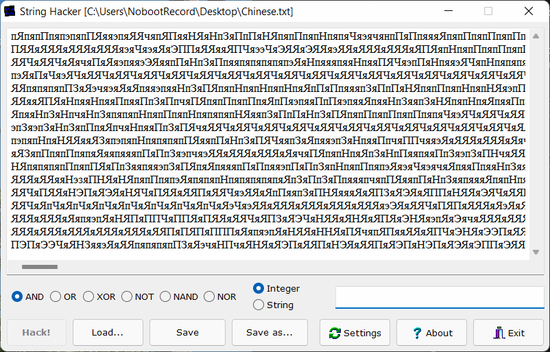

Небольшая программа, которая позволяет производить бинарные операции (XOR, OR, AND, NOT) над текстом и строками.
Написана чисто ради прикола. Может пригодиться для развлечений с текстом и бинарными операциями, а также для шифрования файлов (в мирных целях, разумеется) :)
Идея этой программы появилась у меня ещё 5-6 лет назад, ещё в те времена, когда я программировал на сковороде с транзисторами Visual Basic 6.0.
Тогда программа именовалась xor hacker. Всё, что она умела делать - это XORить всё на свете. Плюс ко всему - у неё был неудобный интерфейс.
В январе нового 2022 года я вспомнил об этой программе и решил переписать её с нуля. Сначала хотел на C/C++, но потом что-то пошло не так, и в итоге я переписал её на Delphi. Как-то так :\
Особенности:
• Мало весит (около 500 Кб)
• Простой и понятный интерфейс
• Нетребовательна к системе
• Есть русский язык
Скачать бесплатно без смс, регистрации и малварей:
• Версия 1.1 от 08 января 2022 года. Исправлены кое-какие недочёты, обновлён интерфейс программы, добавлены новые функции.
• Версия 1.0 от 03 января 2022 года. Самая первая версия данной программы - публичный релиз.
Записано 04 февраля 2022 года
© Ivan Movchan 2021 - 2022 | All rights reserved
Хостинг сайта: GitHub